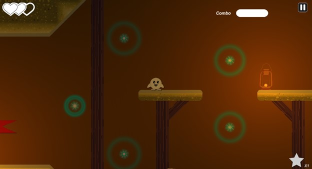
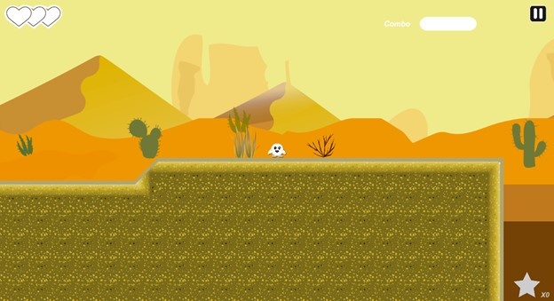
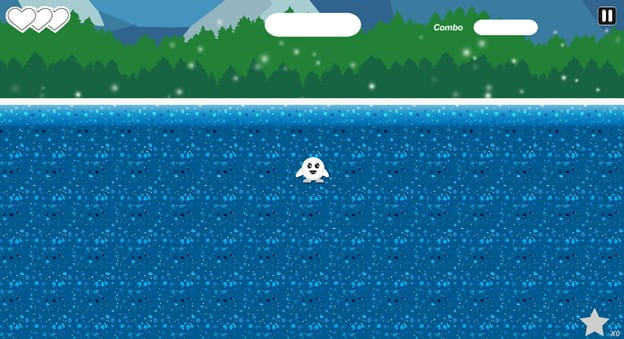

| Capstone Progress Week 12 |
This week was mainly spent adding some polish to levels and fixing some bugs.
I started by making the underground section of level 2 darker and added some lights to the decorative lanterns using the universal rendering pipeline.
This added more atmosphere and difficulty to the cave, which I really liked.

I also implemented the parallax background that Joana made for us.
It has three layers: dunes, canyons, and pyramids, all with the parallax script I made for the previous scene.
I think the mix of dark caves and bright deserts makes this my favorite level so far.

During the open house last week, someone who tested our game found a bug where the player would respawn in the ground sometimes in level one.
This was an easy enough fix, but still weird that the issue just showed up out of nowhere during the final few weeks of development.

Hyangsu and I fixed the issue with the second boss not doing his attacks properly.
The issue was that the code was checking for a tag that did not exist in this scene.
To fix this, we changed the tag being checked to be the same as the one the tile map was using.
This allowed the wolf, buffalo, and vulture to act accordingly, and not get stuck.
Collectables have been broken for a few weeks now, and since we decided to do one more big level to finish the game, I have had some time to fix them up. The main issue was that they were not being tracked correctly. Sometimes, one collectable would count as three, and sometimes it just wouldn’t display the count at all. I started by looking through our old collectable scripts and noticed that some code was used multiple times on different objects. For example, the game manager had a script to detect if the player collected an item, and the stars themselves had the same kind of functionality. Rewriting the code for collecting fixed the issue of one counting as multiple, but the other issue was a little more obscure. I forgot exactly where it was, but one of the scripts would constantly update the collectable count to be 0. Removing this one line of code fixed it. There is still a lot we need to get done before the Level Up showcase on the 19th. We still need to finish level three, add in some missing animations, implement some more sounds, and of course, fix a lot of bugs. I think this will be the first time we all experience crunch, but I think the final product will be worth it. |
|---|